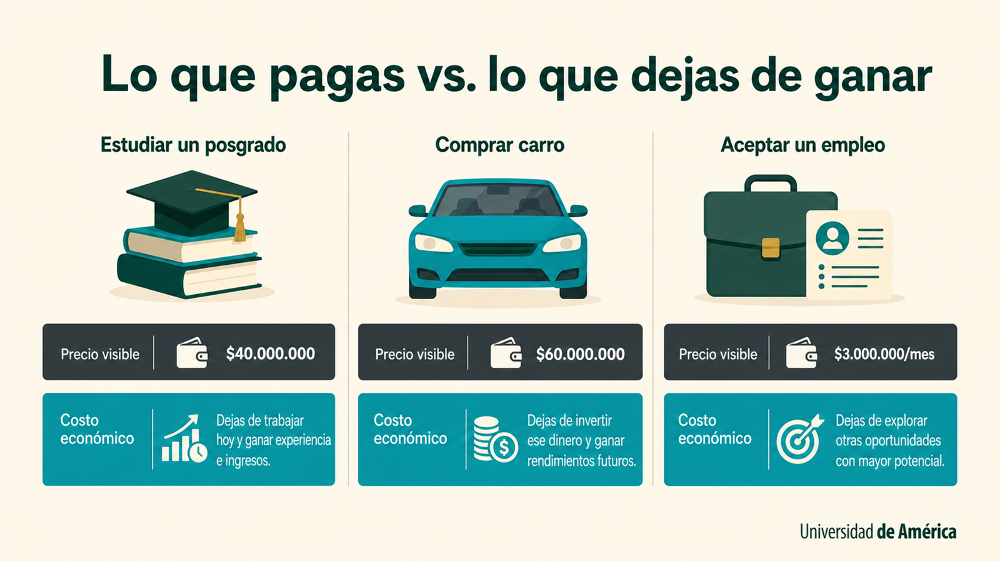

Microeconomía: el arte de maximizar resultados con recursos limitados.
Imagina que tienes mil pesos y dos antojos: un helado o un café. Elegir uno significa renunciar al otro. La microeconomía estudia precisamente eso: cómo las personas y las empresas deciden qué hacer con recursos que nunca alcanzan para todo. Al final del bloque vas a poder leer cualquier decisión de compra o de precio como lo que es: una señal dentro de un sistema.
Cada vez que eliges algo, ya estás haciendo economía.
No vas a estudiar economía solo para entender el dólar o las noticias del Banco de la República. La vas a estudiar para reconocer las decisiones económicas que ya tomas todos los días: en qué gastas tu plata, en qué inviertes tu tiempo y a qué le dices que no.
Tienes cuatro horas libres el sábado. Puedes estudiar para un parcial, salir con tus amigos, descansar o trabajar en un proyecto personal. Solo puedes hacer una bien. Cualquier opción que escojas renuncia a las otras tres. Acabas de tomar una decisión económica sin darte cuenta.
La microeconomía estudia ese tipo de decisión, pero llevado a otra escala: lo que decide una persona cuando compra, lo que decide una empresa cuando produce y lo que decide un mercado entero cuando fija un precio.
Al final del bloque vas a poder mirar cualquier compra cotidiana, cualquier precio o anuncio publicitario y entenderlo como lo que realmente es: una pieza dentro de un sistema de elecciones bajo restricción.
Analizar decisiones cotidianas usando los conceptos de escasez, costo de oportunidad, teoría del consumidor y oferta-demanda. Vas a poder explicar por qué la gente compra lo que compra y por qué los precios se mueven como se mueven.
+ ¿Por qué se llama «micro»? ¿Hay también «macro»?
«Micro» viene del griego y significa pequeño. Aquí estudias decisiones de actores concretos: una persona, una familia, una empresa, un mercado puntual.
La macroeconomía mira lo grande: el país entero, la inflación, el empleo, la tasa del Banco de la República. Es el siguiente bloque del programa. Las dos miradas se complementan: nadie decide bien sin entender las dos escalas.
Escasez no es pobreza: es que nunca alcanza para todo.
Aunque tengas mucho dinero, tu día sigue teniendo solo 24 horas. La escasez es la condición permanente de la vida económica y aparece en tres dimensiones que seguro reconoces. Pasa por las tres pestañas.
Tiempo: la única restricción que no se compra
El día tiene 24 horas para todos: el millonario y el estudiante. Cuando dedicas una hora a estudiar, esa hora ya no la puedes usar para trabajar, descansar o ver a alguien. Por eso decimos que el tiempo es la primera restricción económica: no se acumula, no se devuelve y no se compra con dinero.
Dinero: tu presupuesto cuenta tus prioridades
Un presupuesto no es solo un límite: es un retrato de lo que valoras. Si pagas más por café de especialidad que por la suscripción al gym, eso dice algo de ti. La pregunta importante en economía no es «¿cuánto tengo?» sino «¿qué valor saco de cada peso que gasto?».
Recursos del planeta: el límite que no negocias
La escasez no es solo personal. El agua, la energía, la tierra y los minerales también se agotan. Eso empuja a las empresas y a los países a innovar (encontrar cómo hacer lo mismo con menos) y a redefinir qué significa «crecer» cuando el planeta pone el techo.
El verdadero costo de algo es lo que dejas de ganar al elegirlo.
Cada decisión cierra puertas. La economía le pone nombre a esa puerta cerrada: costo de oportunidad. Es, junto con la escasez, el concepto más útil que vas a aprender en este bloque.
Maratoneas una serie en Netflix durante cuatro horas un domingo. ¿Cuánto te costó? Cero pesos si solo miras la suscripción. Pero si en esas cuatro horas podrías haber ganado $80.000 en un domiciliero, o haber adelantado un trabajo que te tomará la noche entera ahora, esos $80.000 (o esa noche perdida) son tu costo de oportunidad real. El contador no lo ve, el economista sí.
El costo de oportunidad sirve para cualquier decisión, desde cómo organizas tu semana hasta si una empresa abre una sucursal. La diferencia con el costo «contable» (el de la factura) es enorme: el contador mira lo que pagaste en plata; el economista mira lo que dejaste de ganar.
Y eso cambia las preguntas que te haces. En lugar de «¿puedo pagar esto?» empiezas a preguntarte «¿es esto lo mejor que puedo hacer con este tiempo, dinero o esfuerzo?».
+ ¿Cómo lo aplica una empresa de verdad?
Imagina que una panadería del barrio tiene $20 millones libres. Puede usarlos para:
- Comprar un horno más grande y producir más pan.
- Abrir un punto nuevo en otro barrio.
- Dejar el dinero en un CDT al 11% anual.
Si elige el horno, el costo de oportunidad real no es «20 millones»: es la utilidad extra que habría generado el punto nuevo (digamos $4M al año) o el interés del CDT ($2.2M al año). Decidir bien es elegir la opción cuyo retorno sea mayor que el de las alternativas. Por eso los economistas hablan de «costo» aun cuando no hay factura de por medio.
El costo de algo es aquello a lo que renuncias para obtenerlo.
Tienes una entrada gratis a un concierto que vale $200.000. Tu segunda mejor opción para esa noche es trabajar y ganar $80.000. ¿Cuál es el costo de oportunidad real de ir al concierto?

Lo que pagas no siempre es lo que cuesta
Esta tabla compara tres decisiones cotidianas — estudiar un posgrado, comprar un carro, aceptar un empleo — desde dos ángulos: el precio visible que aparece en la factura y el costo económico que es lo que dejas de ganar al elegir.
La diferencia entre las dos columnas suele ser mucho mayor de lo que parece. Por eso el costo de oportunidad es la métrica más usada por los economistas para evaluar si una decisión vale la pena.
Comprar nunca es solo comprar: dice algo de ti.
Dos personas con el mismo sueldo gastan muy distinto. La economía no juzga el gusto de nadie: estudia cómo cada quien combina lo que quiere, lo que puede pagar y lo que le da satisfacción para decidir qué comprar.
Utilidad
Es la satisfacción que esperas obtener al comprar algo. No siempre va con lo más barato ni lo más funcional: a veces lo que te «llena» es la marca, el diseño o la experiencia.
Preferencias
Lo que valoras más que el resto. Algunas personas prefieren estatus, otras comodidad, otras ahorro o pertenencia. No hay preferencia «buena» o «mala»: cada quien tiene la suya y eso explica decisiones distintas con ingresos iguales.
Restricción presupuestal
Tu cuenta bancaria pone el límite. La economía estudia cómo combinas lo que deseas con lo que sí puedes pagar, sin juzgar si tu gusto es «racional» o no.
¿Por qué alguien ahorra tres meses por unas zapatillas?
Pagar 800 mil pesos por unas zapatillas de edición limitada parece irracional si unas genéricas de 80 mil cumplen la misma función. La teoría del consumidor da vuelta a la pregunta: ¿qué satisfacción extra entrega el diseño, la identidad o la pertenencia frente al sacrificio de no usar esa plata en otra cosa? El precio que está dispuesto a pagar refleja todas esas utilidades, no solo el cuero y la suela.
+ ¿Y eso de la «utilidad marginal»? Lo escuchas mucho
Utilidad marginal es la satisfacción adicional que te da una unidad extra de algo. La primera porción de pizza un viernes en la noche es maravillosa. La cuarta ya no tanto. La sexta puede ser incómoda.
Esa caída se llama utilidad marginal decreciente y explica un montón de cosas: por qué las promociones «lleve 3 pague 2» funcionan solo para algunos productos, por qué el primer carro de la familia es más valioso que el tercero, y por qué nadie quiere comprar 20 botellas de agua a la vez.
+ ¿Las decisiones del consumidor son siempre racionales?
No. La economía clásica asume que el consumidor es racional, pero la economía conductual (popular desde el premio Nobel de Daniel Kahneman en 2002) demostró que caemos en sesgos predecibles: nos cuesta elegir entre demasiadas opciones, valoramos más lo que está por perderse que lo que podemos ganar, y nos influyen el orden de las opciones o el color del empaque.
Esto no invalida la teoría del consumidor; la complementa. Las dos miradas conviven en cualquier análisis serio de mercado.
«Tu cerebro al comprar» — psicología del consumidor
Una pieza de audio que conecte la economía clásica con la economía conductual de Kahneman: por qué a veces decidimos bien y por qué a veces caemos en sesgos predecibles.
El precio no se inventa: nace de un acuerdo silencioso.
En cada precio que ves hay una conversación callada entre dos lados: los que quieren comprar y los que quieren vender. Cuando esa conversación llega a un acuerdo, aparece el precio. Cuando se rompe, el precio se mueve.
Una boleta para el concierto de Bad Bunny en Bogotá salió a $400.000. Se agotó en 12 minutos. Al día siguiente alguien la revende en $1.200.000 y aún así la compran. ¿Qué pasó? La oferta era fija (un solo concierto, X sillas) y la demanda explotó. El precio subió hasta encontrar a alguien dispuesto a pagarlo. Eso es oferta y demanda en vivo.
Si el precio sube, la mayoría compra menos
Cuando algo se vuelve más caro, la gente busca proteger su presupuesto o cambiar a una alternativa más barata. Por eso decimos que precio y cantidad demandada se mueven al revés: uno sube, el otro baja.
Si el precio sube, producir más se vuelve atractivo
Los productores ven el precio alto como una invitación a vender más, siempre que sus costos lo permitan. Aquí precio y cantidad ofrecida se mueven igual: uno sube, el otro también.
Cuando compradores y vendedores tienen fuerzas parecidas, el precio se estabiliza. Si una de las dos fuerzas se dispara o se hunde, el precio se mueve hasta encontrar un nuevo equilibrio. El número de arriba es solo una escala 0–100 de fuerza de mercado, no unidades vendidas.
En diciembre, el precio del tomate sube en todas las plazas de mercado del país. ¿Es por oferta o por demanda?
Por las dos, pero con distinto peso según el año. Del lado de la oferta: las lluvias y las heladas de fin de año dañan cultivos y reducen cuánto tomate llega al mercado. Del lado de la demanda: en diciembre se cocina más en casa por las festividades, así que la gente compra más. Las dos fuerzas empujan el precio hacia arriba al mismo tiempo. Por eso en Navidad el tomate siempre parece caro.
Detecta un cambio de precio reciente
Piensa en un producto cuyo precio haya cambiado notoriamente en los últimos meses: café, huevos, gasolina, una suscripción de streaming. Identifica si el cambio se explica mejor por algo que pasó del lado de la oferta (escasez de materia prima, una huelga, una sequía), del lado de la demanda (cambio de moda, nuevo impuesto al consumo) o de las dos al tiempo. Este ejercicio prepara el terreno para lo que viene.